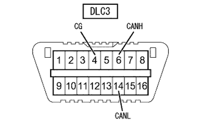

| to the next | |
CAN communication system (with VSC) How to proceed with trouble shooting |
The CAN communication abnormality code is also output by the ECU of the Can Communication system, the internal abnormality of the sensor, and the power supply abnormality, so be careful if the internal abnormality of the system or the power supply abnormality is output or memorized at the same time.
If the CAN communication abnormality code is confirmed, or if there is no response from the ECU to the SST (Tascan), which is output by CAN communication, first confirm that the DLC3 branch line and the CAN bath main line are normal.
By checking the DLC3 terminal using SST (Toyota Electrical Tester), the abnormalities of the DLC3 branch line and the CAN bath main circuit can be confirmed.
By using SST (Tascan) to confirm the 'CAN bus connection ECU', you can check the ECU (sensor) in the bronze disconnection connected to the can No.1 bus circuit.(CAN bus main line circuit normal)
| Step 1 | Vehicle entry |
| |||||
| Step 2 | Examination and phenomenon confirmation |
| |||||
| Step 3 | Diag code confirmation (All Diagcode) |
Use SST (Tascan) to perform 'Diag (All) confirmation'.
 reference
reference
| |||||
| Step 4 | DLC3 inspection (Canh ← → CANL) |
Make IG OFF.
 |
Use SST (Toyota Electrical Tester) to measure resistance between 6 (Canh) ← → 14 (Canl) of DLC3.
| Measuring terminal (Terminal name) | Measurement conditions | Measurement result | Destination |
|---|---|---|---|
| 6 (Canh) ← → 14 (Canl) | IG OFF | 54-69Ω (OK) | A |
| 6 (Canh) ← → 14 (Canl) | IG OFF | 69Ω or more (NG) | B |
| 6 (Canh) ← → 14 (Canl) | IG OFF | 54Ω or less (NG) | C |
referencereference
|
| ||||
|
| ||||
| |||||
| Step 5 | DLC3 inspection (BAT ← → CANH, CANL) |
 |
Use SST (Toyota Electrical Tester) to measure the resistance between each terminal of DLC3.
| Measuring terminal (Terminal name) | Measurement conditions | Reference value |
|---|---|---|
| 6 (Canh) ← → 16 (BAT) | IG OFF | 6kΩ or higher |
| 14 (CANL) ← → 16 (BAT) | IG OFF | 6kΩ or higher |
reference
|
| ||||
| |||||
| Step 6 | DLC3 inspection (CG ← → CANH, CANL) |
|  |
Use SST (Toyota Electrical Tester) to measure the resistance between each terminal of DLC3.
| Measuring terminal (Terminal name) | Measurement conditions | Reference value |
|---|---|---|
| 4 (CG) ← → 6 (Canh) | IG OFF | 200Ω or higher |
| 4 (CG) ← → 14 (CANL) | IG OFF | 200Ω or higher |
reference
|
| ||||
| |||||
| Step 7 | Confirmation of the CAN communication recruitment system (ECU, sensor) installed |
Check the installation status of the CAN communication adoption system from the specifications of the vehicle and the installed parts.(The point isreference)
| |||||
| Step 8 | TASCAN inspection (CAN bus connection confirmation) |
Display the 'CAN bus connection ECU confirmation' screen of SST (Tascan).(The point isreference)
Check the screen display for about 1 minute and check the display of the connection ECU.
| A | All ECUs connected to CAN communication are displayed on the screen |
| B | ECU, which should have been connected to CAN communication, and something that is not displayed on the screen with a sensor |
| C | ECU, which should have been connected to CAN communication, those that are not displayed on the screen with sensors, displayed during confirmation ← → hidden ECU, sensor are mixed. |
referencereference
|
| ||||
|
| ||||
| |||||
| Step 9 | Communication abnormality diagram check |
SST (TASCAN) ‘CAN Bus Diagnosis '→‘ Correspondence Diag Diag confirmation'.(The point isreference)
Record all the code of the past diagram items memorized by each ECU.
See) When the ECU or sensor connected to the can communication is displayed, a past failure that has not yet occurred is considered.
| |||||
| Step 10 | Diagcode combination table check |
From the combination of the output CAN communication diagram code, select the ECU that has been interrupted.(The point isreference)
| |||||
| Step 11 | Bug reproduction test |
Use SST (Tascan) to delete the diag code.
Inspection of defective simulation inspections for ECU, sensors, their harnesses, and connectors selected in the diagcode combination table.(The point isreference)
| |||||
| Step 12 | Adjustment, repair or replacement |
| |||||
| Step 13 | Confirmation test |
| |||||
| |||||
|---|---|---|---|---|---|